పూరీ జగన్నాథుడు — who he is; the living Puri story of Krishna’s heart; how the public form appeared; how the temple endured; how he is loved today.
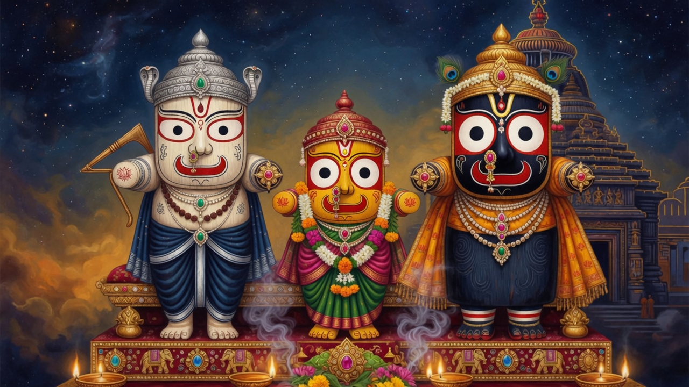
Balabhadra, Subhadra, and Jagannath — traditional order with Subhadra in the middle.
On the eastern coast of India, in the city of Puri in Odisha, stands a temple that millions simply call Srimandir. Within its inner sanctum sits a form of the Divine unlike the polished stone gods of many other shrines. His name is Jagannath — Lord of the Universe — from the Sanskrit words jagat (the world) and nātha (lord).
He is not alone. On the jewelled throne called the ratnavedi or ratnasinghasana, the three stand in their traditional order: elder brother Balabhadra to one side, sister Subhadra in the middle, and Jagannath to the other — with the companion presence of Sudarshana. Their bodies are carved from sacred neem wood, called daru. Their eyes are large and round — so large that living devotion calls him Chakadola, the round-eyed Lord who never looks away. Their limbs do not look like ordinary finished statues. To devotees, that look is not a defect. Later chapters tell both the Indradyumna workshop story and the living story of why those eyes grew so big in love. It is the face by which the Lord of the Universe has chosen to be known in Puri.
In older sacred speech he is also called Purushottama, the Supreme Person. The land around him is Purushottama Kshetra, Shrikshetra, Nilachala — the blue mountain by the sea. For Vaishnavas he is Vishnu and Krishna in a uniquely approachable form. For Odisha he is the heart of a whole culture of food, festival, song, and service.
To understand Jagannath is to walk a path that begins in mythic memory, moves through the building of a great temple, and arrives at the living worship of today. The pages that follow tell that path as a story: how many devotees connect him to the farewell of Krishna at Dwaraka, how tradition says his presence reached the eastern shore, how Nilamadhava and Indradyumna opened the public form of the Lord, how kings and saints built and guarded his house, and how the year still opens for him on chariots of wood.
Where the tale comes from the Mahabharata, the Bhagavata, Odia poets, and temple legend, it is told as tradition and labeled as such. Where stone, kings, and recorded history speak, that too is woven in. We will not turn living mystery into fake science, and we will not pretend every strand is the same book written once.
What follows is told according to the living story of Puri and Odisha — the devotion that pilgrims hear from local lore, Odia poetic memory (especially the world shaped by Sarala Dasa), and the way many people of Shrikshetra connect Jagannath to Krishna of Dwaraka. It is a living sacred story, not a verse-by-verse quote from the Sanskrit Mahabharata or Bhagavatam. Those great books remember Krishna’s departure and Arjuna’s grief in their own way; Puri’s living story continues the love further, across the sea, into Nilachala.
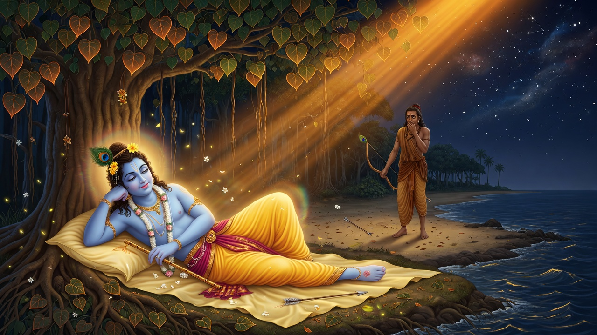
Prabhasa — where the living story of Puri begins its journey from Krishna’s farewell.
In the living memory of Puri, the story of Jagannath does not begin only with a king and a temple. It begins with a farewell on the western sea. After the age of the Mahabharata war, after the long glory of Dwaraka, the Yadava world collapses under curse and conflict. The city that once shone like a jewel begins to empty of heroes. Krishna, the friend of Arjuna and the heart of the world, goes to Prabhasa. There, beneath a tree, he rests. A hunter named Jara, seeing the sole of the Lord’s foot and mistaking it for a deer, draws his bow. The arrow finds its mark. The age of Krishna’s earthly play, as people in Puri still say with tears in the voice, reaches its appointed end.
The great Sanskrit books also remember this turning. The Mahabharata’s Mausala Parva and the Bhagavata Purana both know Jara, Krishna’s departure, the grief of the survivors, and the drowning of Dwaraka. But in Puri the story does not stop at departure. Living devotion asks a child’s question with a devotee’s seriousness: If Krishna left, where did his love go? The answer that lives on the Grand Road and in Odia storytelling is this: love did not vanish. Love took another form, another coast, another home — and that home is Nilachala.
Shared scriptural frame (departure of Krishna, Jara, Dwaraka’s end): Mahabharata and Bhagavatam. The continuation into “heart–ocean–Puri” is the living Puri/Odia story developed below — not a claim that every line is printed in those two Sanskrit works.
Living Puri story: Arjuna’s grief, the funeral fire, and the unburnt heart shining with golden aura.
According to the living story told in Puri, Arjuna comes as friend, not only as warrior. He has shared Krishna’s life through exile, war, counsel, and laughter. Now he must face the silence after the Lord’s last play. In the Odia imagination shaped especially by poets like Sarala Dasa, Arjuna performs the last duties of love. A funeral fire is raised. Scents and wood are offered. The world expects the ordinary end of a body.
But the fire, says the living story, cannot finish its work. When the flames have done all that fire can do, something remains — radiant, unconsumed, impossible to treat as ash. The people of Puri call it Krishna’s heart. Not a medical object for laboratories, but the living core of the Beloved that heaven itself will not let the world discard. Arjuna stands before a mystery: even death cannot take everything from Krishna. Something of the Lord still waits for another journey.
Then, as so often in sacred story, a voice beyond the pyre speaks into Arjuna’s grief. He is told not to force this unfinished grace into ordinary burial. He is told to entrust the heart to the ocean — to join it with wood, a sacred log, and give it to the western sea that once held Dwaraka. The sea will become a road. Time will become a boatman. The heart will travel until it finds the shore where the next age of worship is waiting.
In the Sanskrit Mahabharata, Arjuna does arrange the cremation of Rama (Balarama) and Vasudeva (Krishna) and performs the rites of the dead — but that text does not narrate an unburnt heart or a voyage to Puri. The living story of Puri takes the grief of Arjuna and the fire of farewell and continues them into a devotion the eastern coast still sings.
Living Puri / Odia story: unburnt heart, Arjuna’s entrusting of it to the sea with wood. Literary memory often linked to Sarala Dasa’s Odia Mahabharata world. Mahabharata Mausala confirms cremation rites by Arjuna’s care, not the heart-to-Puri voyage.
According to Puri’s living story: the heart rides the ocean road from the west toward Nilachala.
So, in the living story of Puri, Arjuna obeys. The heart of Krishna, bound to wood, is given to the waters off the western coast. The log does not merely drift for a day or a week in the tellings people love. It moves across a sacred stretch of time. It rounds the long curve of Bharata’s shore. From the west, where Dwaraka once glittered and then sank, the sacred burden travels toward the east, where another blue mountain rises beside another sea — Nilachala, the home that will be called Purushottama Kshetra, Shrikshetra, Puri.
Pilgrims who hear this story on the sands of Puri often feel a simple thrill: the same ocean that swallowed Dwaraka becomes the path that delivers love to Odisha. West and east are not two different Gods. They are two chapters of one Beloved. When the waves strike the beach near the temple, some say they are still carrying the memory of that journey — the heart that would not burn, seeking the land that would never stop worshipping it.
This is not a shipping log with dates and ports. It is theology told as tide. It answers the fear that Krishna’s age ended in silence. The living story of Puri answers: no — Krishna’s age changed coast, changed form, and kept its heart.
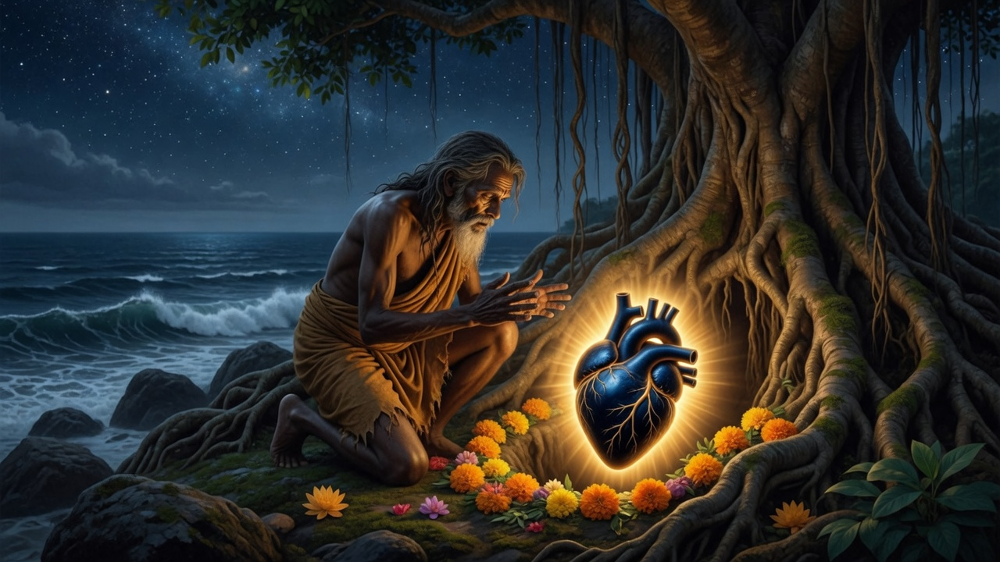
Living story: Viswabasu finds the blue sacred heart — Nilamadhava’s beginning.
The living story grows still more tender. The hunter Jara, who released the arrow at Prabhasa, does not remain forever only the man of the wound. In the Odia weaving remembered in Puri, he is reborn in the forests of the east as Viswabasu (Biswa Basu) of the Sabara people. Destiny folds guilt into service. The hand that once hurt the Lord’s foot becomes the hand that will serve the Lord’s remaining presence.
There, among trees and secret paths near the blue mountain, Viswabasu discovers what the sea and the ages have delivered. Living tellings speak of a congealed blue sacred presence — a blue stone, a heart become jewel, the living core of Krishna — and he worships it as Nilamadhava, the blue Madhava of the forest. No palace yet. No stone tower yet. Only a tribal devotee and a hidden God, offerings of deep simplicity, and a secret that kings do not own.
This is why people in Puri often say that Jagannath’s love includes the forest and the palace, the Sabara and the king, the west and the east. The living heart-story makes Viswabasu not a side character, but the bridge between Krishna’s farewell and Puri’s beginning.
Only after this, in the same continuous telling, does the royal chapter open. King Indradyumna hears of the miracle of the blue Lord. He longs for darshan. He sends Vidyapati. The search for Nilamadhava begins — and, as the next part of this book tells in full, the sapphire form is concealed, a divine log appears from the sea, and the public wooden forms of Balabhadra, Subhadra (in the middle), Jagannath, and Sudarshana are carved and consecrated.
In the living story of Puri, these are not two unrelated myths stacked at random. They are one love told in two movements: first the heart that travels from Dwaraka; then the king who builds a house for the Lord of the Universe. Some tellings feel that the sacred log Indradyumna receives is itself bound to that same ocean journey of grace. Other official temple summaries begin with Nilamadhava and Indradyumna without always spelling out the heart voyage. Both ways of speaking live side by side in Odisha. A pilgrim can honour the Skanda–Purushottama cycle and still weep at the living story of Krishna’s heart. Devotion in Puri is large enough for both.
And when, once in a generation, Nabakalebara renews the wooden body and transfers the secret Brahma padartha, many living voices quietly connect that protected essence to this same stream of belief — the sense that something of Krishna’s own core continues inside the Lord’s daru form. What that substance is, the temple does not publish. Respect stops at the closed door. The living story does not need a photograph of the secret to keep loving it.
Living story in Puri / Odisha: Krishna’s unburnt heart, Arjuna, ocean voyage to the eastern shore, Viswabasu and Nilamadhava, link in popular devotion to Jagannath’s continuity and (for many) to the mystery of Brahma padartha. Not identical to every line of Sanskrit Mahabharata/Bhagavatam or every official Indradyumna summary. Not a scientific claim about anatomy.
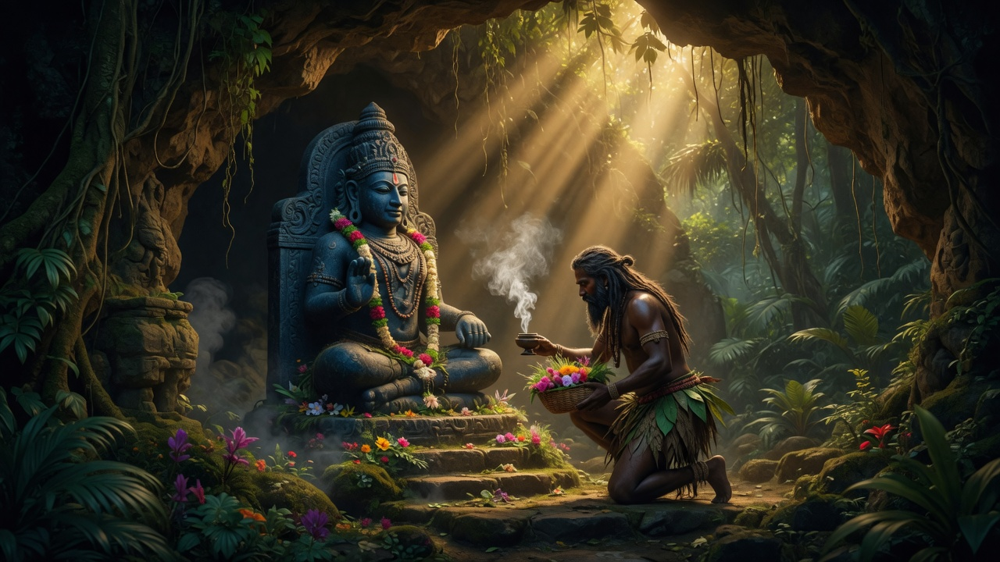
Nilamadhava — worshipped in secret before the world knew his public wooden form.
In the living story of Puri told in the previous chapter, Viswabasu finds the blue heart of Krishna and worships it as Nilamadhava. The classic temple origin cycle now opens that same forest door more fully. Long before the tall stone tower rose over Puri, tradition says the Lord already lived near that shore as Nilamadhava — the blue Madhava — a radiant presence kept in seclusion among the forests of the blue hill.
His guardian was not a palace priest. He was Viswabasu (also told as Viswavasu), chief of the Sabara people, a forest community. Every day Viswabasu went alone to serve the hidden Lord with simple offerings of deep devotion. The location of the shrine was a secret of his people. The world of kings did not yet know the path.
This part of the story is essential. Jagannath’s tradition does not begin with a royal temple alone. It begins with a tribal devotee who loved the Lord when the Lord was still hidden — and, in Puri’s living heart-story, that devotee is also the healed continuation of Jara’s destiny.
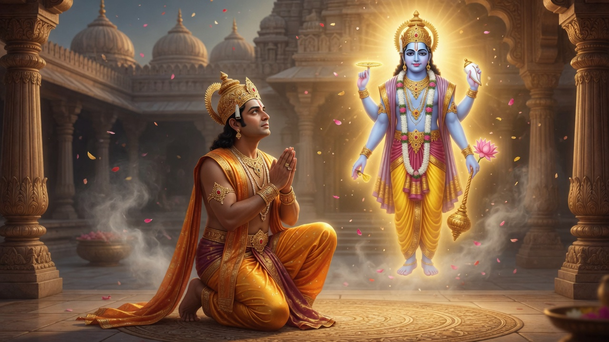
In the age remembered as Satya Yuga, there lived a king named Indradyumna in the land of Malava. He was a ruler, but more than that he was a seeker. He longed not merely for victory or wealth, but for direct darshan of Vishnu.
Through family priests and wandering pilgrims, word reached him of a blue form of the Lord worshipped on the shore of the southern sea. Hope caught fire in his heart. He sent a trusted man — Vidyapati, remembered in temple telling as the brother of his priest — to find that place and that God.
Vidyapati travelled far and reached the Sabara country. There he met Viswabasu. At first the chief would not reveal the shrine. Later, remembering a prophecy that Nilamadhava would one day be established for the world by King Indradyumna, Viswabasu agreed to take him. Vidyapati saw the Lord. He also saw the sacred pool called Rohini Kunda and the divine banyan called Kalpabata. Then he returned to the king with news that would change the history of devotion on that coast forever.
Nilachala — the blue mountain kshetra by the sea.
Indradyumna did not delay. He came himself with family, ministers, and priests. Sage Narada joined them. But when the king reached the place of worship, the sapphire form of Nilamadhava was no longer to be found as before. Tradition holds that the Lord concealed that form. He was preparing a new way to be with the world — not as a secret of the forest alone, but as a public Lord of all people.
The king performed a thousand ashvamedha sacrifices. Before the final offering was complete, a great divine log of wood appeared on the seashore. On Narada’s word, Indradyumna had that log brought to the high altar, the Mahavedi. The sea itself had become the messenger of God.
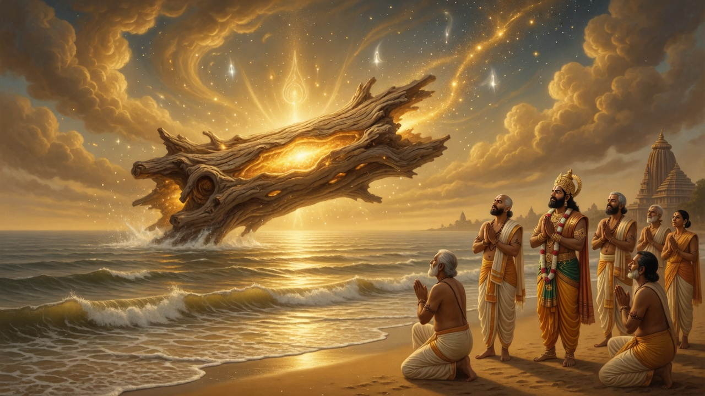
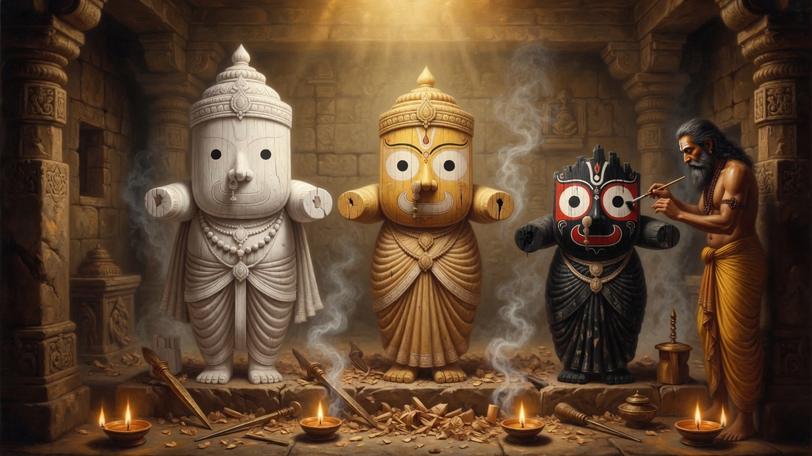
The divine carpenter at work — tradition’s account of how the daru forms were made.
Then the Lord Himself came in the form of a carpenter. Later tellings also name this craftsman as the divine architect Vishwakarma. He agreed to carve the deities from the sacred log, but only on one condition: no one must open the door of the workshop, and no one must disturb him, until the work was finished.
Days passed. From inside the closed room came no sound. Anxiety grew. The king’s queen feared that the carpenter had died at his labour. She pressed Indradyumna to open the door. At last the door was opened.
The carpenter was gone. On the altar stood the unfinished wooden images of Balabhadra, Subhadra (in the middle), and Jagannath — yet they were not fully carved. They had no complete hands and limbs such as ordinary human statues receive. That unfinished look is the same distinctive form still worshipped in Puri.
Indradyumna’s heart sank. He believed the work had failed. Then a divine voice — and, in the traditional telling, the counsel of Narada — reassured him: these forms were accepted exactly as they were, and they must be installed. So the images were wrapped in silken cloth and painted in the prescribed colours. Near the Kalpabata a temple rose. Guided by Narada, the king invited Brahma to consecrate it. The deities were seated, and by the Lord’s order the daily rituals and festival rites of Purushottama began.
Thus, in the story itself, the incomplete appearance of Jagannath is neither damage nor accident left unexplained. The carving was interrupted when the closed door was opened; the forms remained as they were; and the Divine accepted those forms as the true public body of the Lord.
Traditional layer: Shree Jagannatha Temple Administration — Ancient / Legendary Origin; Skanda Purana Purushottama / Indradyumna cycle; Madala Panji temple legend for the interrupted carving. Sacred narrative, not a modern calendar date.
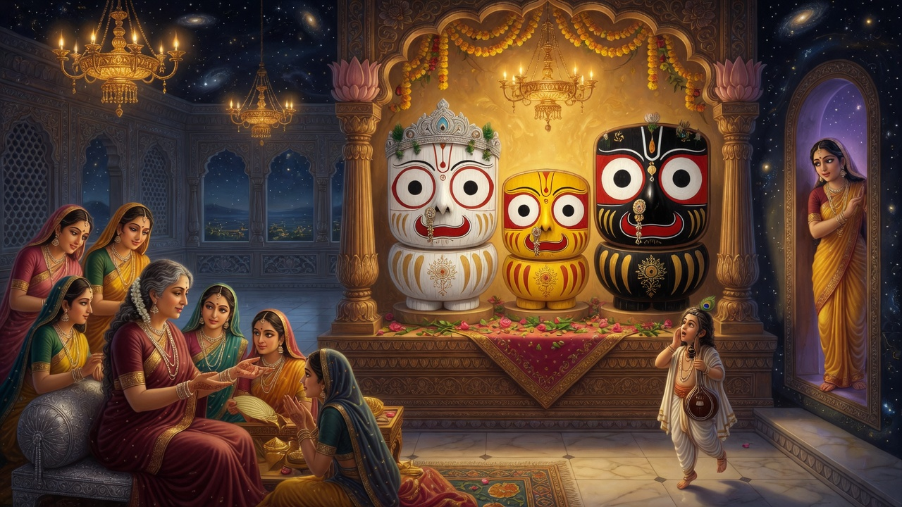
Living Vaishnava story: eyes wide with Vrindavana love — Balabhadra, Subhadra in the middle, Jagannath.
Still another living story explains the form people notice first — the huge, round, lidless eyes that never seem to sleep. In Odisha and in Vaishnava devotion far beyond Odisha, Jagannath is called Chakadola, the round-eyed Lord. Devotees say those eyes are the sun and the moon of mercy; they say he watches every being without blinking. But there is also a full sacred story of how those eyes became so large.
According to a beloved living tradition — sung and retold especially in Gaudiya and related Vaishnava circles connected with Puri — the form of Jagannath is Krishna in the highest mood of love, transformed by separation from Vrindavana and from Radha and the gopis. In Dwaraka, the queens noticed that Krishna sometimes seemed far away, calling names of Vraja at night. They asked Rohini, mother of Balarama, to narrate the Vrindavana pastimes. Rohini agreed, but only if Krishna and Balarama were kept from hearing — for if they heard those stories of pure love, they might leave Dwaraka at once and return to Vraja.
So Subhadra was set to watch the door. Rohini began the katha. The queens listened, lost in wonder. Subhadra herself, standing guard, was drawn into the sweetness of the story. Krishna and Balarama, sensing the vibration of those pastimes, came to the doorway and stood on either side of their sister — Subhadra in the middle, exactly as the three still sit on the ratnavedi. As they heard of Vrindavana, ecstasy rose beyond control. Their eyes grew huge and dilated. Their hands and legs seemed to withdraw into their bodies. The three became unrecognizable — the very forms later known as Balabhadra, Subhadra, and Jagannath.
Then Narada arrived and begged to see that form again. In the living telling, the Lord promised that in Kali Yuga he would give darshan in that same ecstatic form — the form of wide eyes and shortened limbs — at his home in Nilachala. Thus Puri’s wooden Lord is not only the unfinished carving of Indradyumna’s workshop. For many devotees he is also mahabhava-prakasha: Krishna’s highest love made visible, eyes forever open so that no soul is missed.
So the living culture of Puri holds more than one true door into the same face: the daru of Indradyumna, the heart that crossed the sea, and the eyes that opened wide in Vrindavana’s memory. They do not cancel each other. They are different lamps around one Lord.
Living Vaishnava / Puri-related tradition: Kurukshetra–Dwaraka narration of Rohini’s Vrindavana katha; ecstatic transformation of Krishna, Balarama, and Subhadra (Subhadra in the middle); Narada’s request; popular name Chakadola. Retold in Gaudiya sources and Odia devotion (e.g. discussions of mahabhava-prakasha). Complementary to, not a replacement of, the Indradyumna cycle.
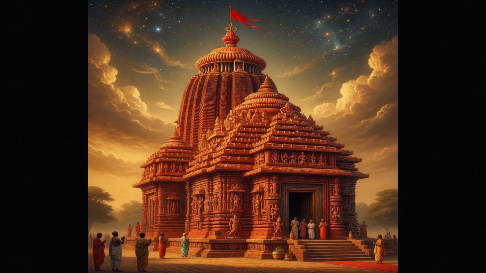
Srimandir — the great house of Jagannath rising over Nilachala.
Tradition holds that Indradyumna first gave the Lord a house and a life of daily service. But history also remembers that the fame of Purushottama was already alive for centuries before the present stone tower was finished. Pilgrims spoke of this kshetra. Poets and dramatists named Purushottama. Inscriptions from distant kingdoms mentioned the Lord of this coast. The holy place was not invented in a single royal year. It was loved, remembered, and approached long before the skyline we know was complete.
Temple chronicles and regional memory also speak of earlier dynasties who cared for Madhava worship at Puri, of times of danger when sacred essence was protected and images renewed, and of scholars who placed an active shrine here well before the twelfth century. The precise year of every early episode is debated among historians. What is not debated is the continuous pull of this place: people came, and kept coming, to meet Purushottama.
Then came a new age of power on this coast. In the early twelfth century, Anantavarman Chodaganga Deva of the Eastern Ganga line established his strength over Utkala and made this land part of a great kingdom stretching far along the eastern seaboard. He was a conqueror, but the story of Puri remembers him most for something quieter and more lasting: he raised a temple worthy of the Lord of the Universe.
Stone by stone, the great Srimandir took shape in the Kalinga style — a soaring curvilinear sanctum, halls for gathering and offering, walls that would later reveal rows of divine forms when later plaster was removed. The work of finishing continued under later Ganga kings. Temple tradition remembers Anangabhima Deva III completing important consecration work in the thirteenth century and seating the deities with royal devotion. The king did not claim to be greater than God. He called himself the Lord’s servant, his rauta. The kingdom itself was imagined as belonging to Purushottama.
That idea still walks the Grand Road every year. When the Gajapati Maharaja sweeps the chariot with a golden broom at Rath Yatra — the rite called Chhera Panhara — he is acting out that old truth: even a king is only a servant before Jagannath.
If you stand before Srimandir today, you see more than architecture. You see a complete world. The main tower rises above the sanctum where the wooden triad sits. Before it stretch the halls of assembly and offering. Around it run fortified walls, and within those walls dozens of smaller shrines form a city of gods. On the tower shines the Nila Chakra, the blue disc, and a flag that is changed daily — as if the Lord’s house itself breathes with the days of the year.
The kitchen of this temple is famous across India. Food cooked for the Lord becomes Mahaprasad, shared among devotees without the ordinary barriers of status. In that sharing, the theology of Jagannath becomes taste and hunger and grace: the Lord of the Universe feeds the world from his own plate.
Historical and architectural layer: Shree Jagannatha Temple Administration — Medieval and Architecture pages; Eastern Ganga construction of the present temple in the twelfth century, with later finishing and royal servant-ideology under Ganga and later kings.
As centuries passed, the Lord of Puri gathered not only kings but poets. In the Ganga age, Jayadeva of Kenduli sang the love of Radha and Krishna in the Gita Govinda. The song was so loved in Odisha that it was allowed to be sung before Jagannath himself. Even silk cloth woven with lines of that poem became part of the Lord’s ritual dress. The temple was no longer only stone and wood. It had become a place where music and scripture met the eyes of God.
Later, under the Gajapati kings, Odia speech itself flowered. Sarala Das retold the Mahabharata in Odia and bound the people’s language to sacred story — including the deep Odia memory that links Krishna’s farewell to Puri’s living heart-story. Royal books of ritual and praise kept teaching how the Lord should be served. Jagannath was no longer only a temple deity. He had become the centre of a whole literary and moral world.
In the early sixteenth century, during the reign of Prataparudra Deva, a saint came to Puri who would change the emotional colour of Jagannath devotion forever. Sri Chaitanya Mahaprabhu lived here for about twenty-four years. He taught that God is reached by love — by the chanting of the holy names, by tears, by the heart’s surrender. For him and his followers, Jagannath was Krishna himself, waiting on the blue hill for the soul’s embrace.
At the same time, Odia saints known as the Panchasakhas — five friends of wisdom — sang their own deep philosophy around Jagannath. They spoke of the Lord as the fullness from which all forms arise, and of the body and the kshetra as places where the infinite plays. Between Gaudiya love and Odia insight, Puri became a meeting place of many paths that still refused to leave the wooden Lord behind.
Devotion does not erase history’s hardness. In 1568, after political collapse in Odisha, Afghan forces under Kalapahar attacked Puri. Temple chronicles remember looting and the desecration of the wooden images. It was a night of fear for the sacred city.
Yet the story does not end in ash. Tradition remembers a devotee, Bisara Mohanty, who protected the secret sacred essence of the Lord — the Brahma padartha — so that worship could live again. In the years that followed, Ramachandra Deva of Khurda restored the temple’s life and new wooden images were made. Around 1575, the Lord was reinstalled. From that restoration, the long practice of renewing the wooden body — remembered as the first great historical turn of Nabakalebara after catastrophe — entered the living memory of Puri.
Later centuries brought more pressure under Mughal-period raids, temporary flights of the deities to safer places, and then British administrative control after 1803. Laws changed. Taxes rose and fell. Arguments about who should manage a Hindu shrine reached even distant parliaments. Through all of it, the niti of the temple — the daily service — struggled, bent, and continued. After Independence, modern Acts of 1952 and 1955 shaped the Shri Jagannath Temple Managing Committee, still headed in honour by the Gajapati Maharaja of Puri. The official living face of that administration today is the temple’s own presence in the digital age, even as the oldest rites remain older than any website.
Story woven from SJTA Medieval history, temple chronicle memory of 1568–1575, and standard later administrative history. Chronicle episodes are traditional-historical memory; legal Acts are modern record.
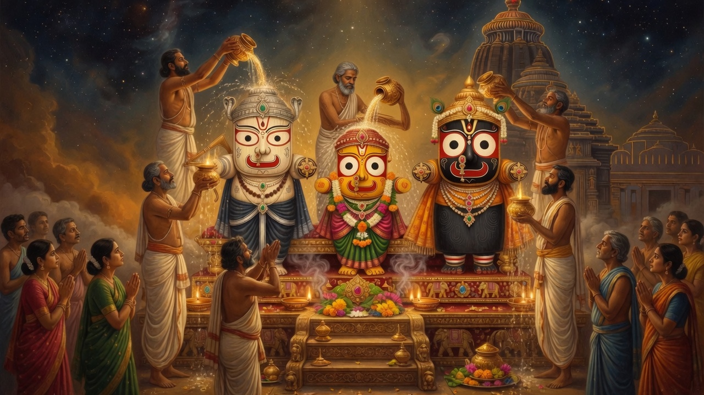
Snana Yatra — Balabhadra, Subhadra in the middle, Jagannath bathed before the world.
Every year, as the heat of summer deepens, the sacred calendar brings Snana Yatra on the full moon of Jyeshtha — often called Devasnana Purnima. Living tradition treats this day as the public birthday-bath of the Lord. Balabhadra, Subhadra (in the middle), Jagannath, and Sudarshana are brought out for a great ceremonial abhisheka. Temple and popular accounts speak of water drawn from the sacred well near the north side of the temple, and of bathing with many pots of sanctified water — widely remembered as one hundred and eight pots shared among the deities in fixed traditional counts.
It is a day of beauty and intensity. The wooden Lords receive water, sandal, and the gaze of thousands. And then, according to the living belief of Puri, something tender and human happens to the Divine: after that enormous bath, the deities are said to catch a divine fever — jwar.
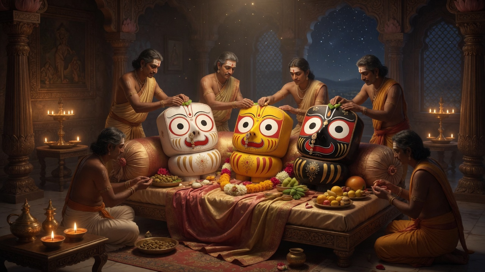
Anavasara — seclusion and recovery after the sacred bath.
This is one of the most moving chapters in the living year of Srimandir, and it must not be skipped. After Snana Yatra, the deities retire into a sealed period called Anavasara (also Anasara / Anabasara) — roughly a fortnight, the dark half of the moon until the world is ready for the chariots. Public darshan of the main forms stops. The city of pilgrims feels the absence like a household feels a beloved parent resting with fever behind a closed door.
In this time the care of the Lords is especially entrusted to the Daita servitors, whose lineage living tradition links to the old Sabara guardianship of the Lord. They offer special rites. Traditional accounts speak of light food — fruits, water mixed with cheese, and herbal medicines including the famous dasamula and related remedies — given as if to a living patient recovering from cold and fever after too grand a bath. The God of the universe, in Puri’s living love, allows himself to be nursed.
Painted substitute forms and limited rites sustain the bond of devotees who cannot see the main murtis. The whole kshetra waits. Only when recovery is complete will the Lords reappear in youthful splendour — Nava Jaubana / Nabajaubana Darshan — and only then will the ropes of Rath Yatra be ready for human hands.
Living niti of Puri: Snana Yatra on Jyeshtha Purnima; Anavasara seclusion of about fifteen days; belief in divine fever after the bath; Daita care with fruits and traditional medicines. Official festive calendars list Snana and Anabasara start together.
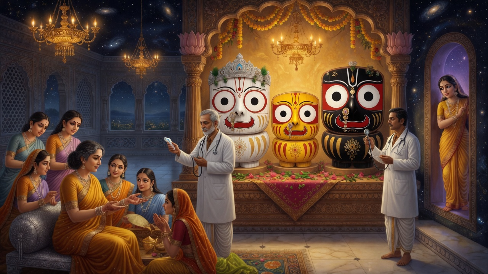
Living ceremonial tradition: a symbolic health check before the Lord rides out.
Here is another living story people ask about — and it belongs firmly to the world of devotion, not to comedy. Because the Lord is believed to fall ill after Snana, living tradition in the Jagannath world includes a ceremonial health examination before he is declared fit for the great journey of Rath Yatra. In many temples of Jagannath — and in popular reportage of the rite as it is still performed with reverence — senior physicians come with the tools of their profession: stethoscope, clinical thermometer, the gestures of a real checkup. They “examine” the deity. They announce recovery. The symbolism is clear: the same Lord who accepts wooden form and festival fever also accepts the language of care that human families use when someone they love is unwell.
At Puri itself the deepest continuous care remains the Anavasara niti of the Daita and the temple’s own Record of Rights. The modern image of doctors and thermometers is best heard as part of the wider living Jagannath culture of treating the deity as a living person — a culture that has grown around the ancient fever-and-rest belief. After the period of recovery and the declaration of fitness comes the reappearance, the youthful darshan, and then the opening of the chariot road.
So the sequence the living year actually walks is not “sudden Rath Yatra.” It is: grand bath → divine fever → closed days of nursing → symbolic / ritual assurance of recovery → renewed darshan → then, and only then, the Lord comes to the street.
Living tradition: Anavasara recovery before Rath Yatra; ceremonial doctor health-check reported across Jagannath temples as symbolic examination (thermometer, stethoscope). Core Puri sequence remains Snana → Anavasara → Nabajaubana → Rath Yatra per temple calendars and niti descriptions.
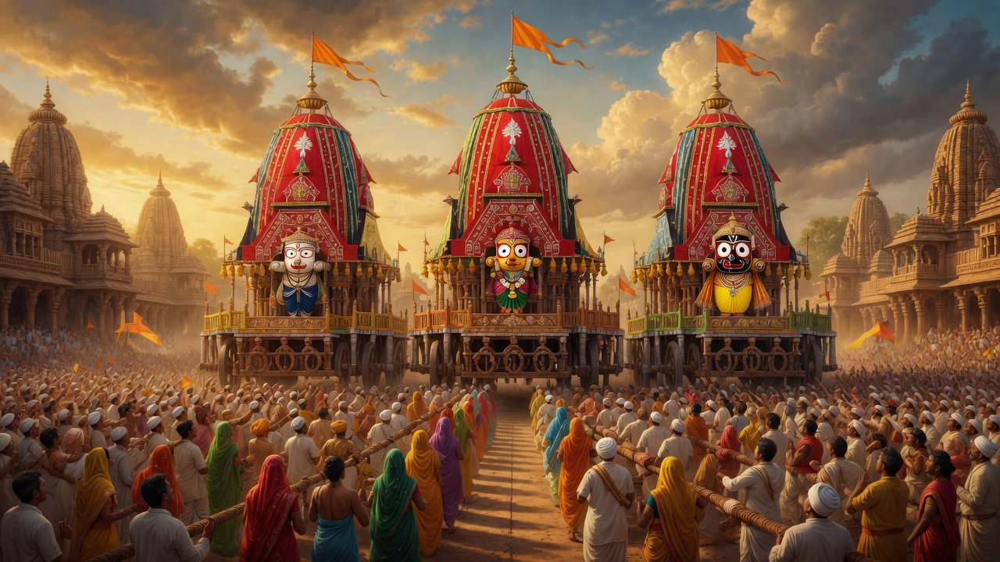
Rath Yatra — after fever and rest, the recovered Lord meets his people.
Only after those quiet days of recovery does the festival the whole world knows arrive. On the second bright day of Ashadha, Rath Yatra — also called Shree Gundicha Yatra — begins. Temple tradition, drawing on the Skanda Purana’s praise of this festival, treats it as the most famous of the Lord’s journeys. After morning rites, the deities come out in the swaying ceremonial procession called pahandi. Sudarshana, Balabhadra, Subhadra, and Jagannath board their towering wooden chariots. The Gajapati Maharaja performs Chhera Panhara, sweeping the chariot floor like a servant of God. Then the ropes are given to the people.
In the traditional chariot order, Balabhadra rides Taladhwaja, Subhadra rides her car in the middle place of the three, and Jagannath rides Nandighosha. The three great cars move along the Grand Road toward Gundicha Temple, about three kilometres away. There the Lord stays for days, as if visiting a garden home. On Hera Panchami, stories of divine longing and search colour the week. Devotees treasure evening darshan at the Adapa Mandap. Then comes Bahuda Yatra, the return journey southward, with its own stops, songs, and meetings — including the tender drama of Lakshmi and the Lord. Gold adornment on the chariots, the sweet drink of Adhara Pana, and finally Niladri Bije bring the deities home to the jewelled throne.
What does this whole arc mean for ordinary people? It means the highest God does not only wait behind walls. He bathes in public, accepts fever and rest like love made near, lets doctors and servitors care for him in the language of a living household, and then comes out so human hands may pull him closer. Dust, sweat, rope, and joy become worship.
Living niti: Shree Jagannatha Temple Administration — Ratha Yatra page and festive calendars. Full living sequence: Snana → Anavasara (fever/rest) → recovery darshan → Rath Yatra → Bahuda → Niladri Bije.
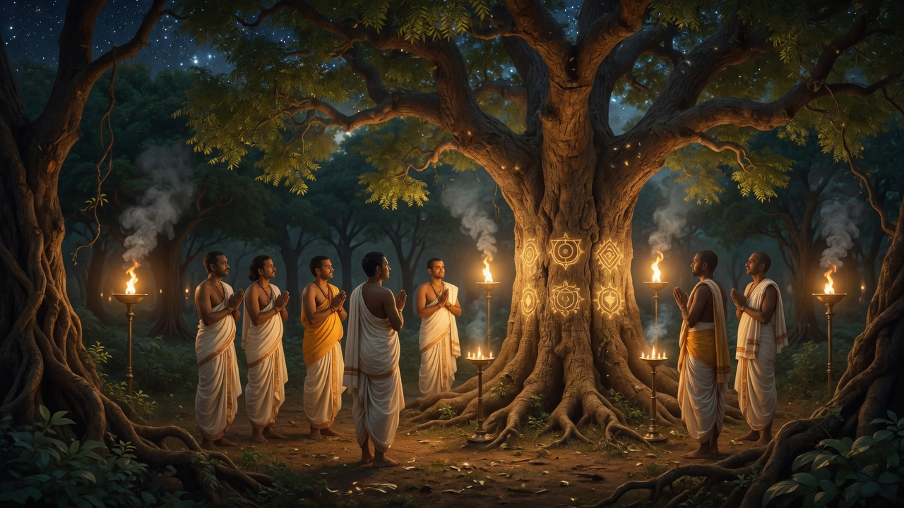
Banajaga — the quest for the marked sacred trees.
Because Jagannath’s public form is wood, it does not last forever like polished stone. Temple tradition therefore keeps one of the most astonishing rites in the Hindu world: Nabakalebara — new embodiment. When the lunar calendar brings a special leap month of Ashadha, the time opens for the wooden deities to be remade. This may come after about eight, twelve, or nineteen years, according to the sky’s arithmetic and temple rule. Recent full ceremonies the modern world watched closely include those of 1996 and 2015.
The story of Nabakalebara begins not in the sanctum but in the forest. Chosen servitors set out on Banajaga Yatra, searching for neem trees that bear the traditional sacred marks for Balabhadra, Subhadra, Jagannath, and Sudarshana. When the trees are found, they are approached with fire-sacrifice, mantra, and restraint. The logs are brought to Puri, to the sacred ground of Koili Baikuntha. There, in secrecy, carvers shape new forms while the city waits.
On a chosen night, the most protected act of all takes place: the transfer of the sacred essence called Brahma padartha from the old forms into the new. What that essence is, living tradition does not publish. Respect stops at the closed door of that mystery. In the living story of Puri, many devotees quietly connect this protected continuity with the same stream of belief that tells of Krishna’s unburnt heart — not as a laboratory proof, but as love’s way of saying: the Lord’s own core has never left this kshetra. The old bodies are buried with honour in the temple premises. The new deities are completed, dressed, and at last shown to the world — often as the great chariot festival approaches — so that the same Lord looks out through renewed wood upon a new generation of devotees.
Living niti: SJTA Nabakalebara page (official process outline). Brahma padartha’s nature is not publicly disclosed. Popular identification with “Krishna’s heart” belongs to living Puri belief, not to a published scientific claim.
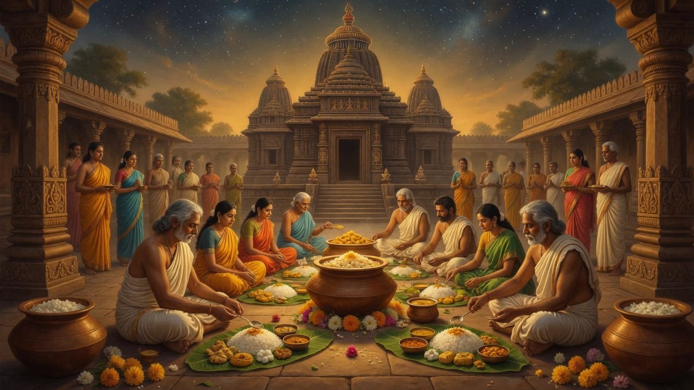
Mahaprasad — the Lord’s food becoming the people’s grace.
If legend tells how Jagannath came, daily niti tells how he still lives. Before dawn the sealed doors of the temple are opened. Lamps are offered in the soft rite of Mangala Alati. Old garlands and clothes are removed. The deities are prepared for the day as a living sovereign would be — teeth cleaned and bathing performed through sacred reflections, the astrologer announcing the day’s lunar truth before the Lord. Breakfast comes as Gopal Ballav Bhoga. Then the great morning meal of Sakala Dhupa fills the air with the fragrance of temple cooking. Midday and evening offerings follow. Sandal paste is applied. In late night the Lord receives the beautiful Badasinghara dress, often linked with the silken memory of Gita Govinda, and a final meal before rest. Doors are sealed again. The house of God sleeps, watched by those appointed to guard it.
Dozens of hereditary and trained servitors move through this day like characters in a continuous sacred drama. Festival days add extra scenes. Ordinary days already contain a whole kingdom of care. This is why devotees say Jagannath is not a statue visited once, but a Lord who is woken, fed, adorned, sung to, and put to rest.
Living niti: SJTA Daily Rituals — from Dwaraphita to Pahuda. Prescribed times may shift on crowded days; the order of love remains.
Ask a pilgrim on the Grand Road what Jagannath means, and you will hear more than one true answer, because the tradition itself is wide.
Many say he is Krishna — the same Lord of the Gita and the Bhagavata, come to Puri in a form that even a child can recognise by the eyes alone. In the living story of Puri, that identification is not abstract: people still tell how Krishna’s heart would not burn, how Arjuna trusted it to the sea, and how that grace found Nilachala. Others stress the older name Purushottama, the Supreme Person above all pairs of opposites. Odia devotion often holds that all avatars rise from him and return into him, so that Jagannath is not merely one descent among ten, but the ocean from which descents come.
People also say he is the Lord of the poor and the broken, because he leaves the temple to ride among them. They say Mahaprasad erases false pride, because the same food is shared. They say the unfinished hands mean he needs the devotee’s hands — that human service completes the divine work. They say the Daitapati servitors carry an ancient link to the Sabara devotion of Viswabasu, so that tribal love and temple love still share one family story — and, in the heart-story, that Viswabasu is even the healed rebirth of Jara. Scholars may debate Buddhist or Jain echoes in history; living Puri, for the most part, bows to Jagannath as the one Lord who holds many meanings without losing his own face.
And every year, when the chariots roll, a simple belief becomes public fact for a day: God is not only to be visited. God also visits.
So the tale of Puri Jagannath runs like this. According to the living story of this kshetra, Krishna’s farewell at Dwaraka did not end love — a heart that fire could not finish crossed the ocean and woke as Nilamadhava in the forest. Through Indradyumna’s longing the Lord became the public wooden form of all. Kings built him a house of stone and called themselves his servants. Poets sang to him. Saints wept before him. Enemies struck the temple, and devotion restored it. Today he is still bathed, fed, dressed, renewed, and drawn through the streets on wheels of wood.
If the Dashavatara shows how Vishnu comes in many forms across ages, Jagannath shows how the Lord of the Universe keeps one coastal home where living story, temple origin, history, and morning ritual still share the same lamp.
Sources used for fact-checking. Traditional stories are told as tradition; historical and ritual claims lean on official temple materials and standard secondary cross-checks.